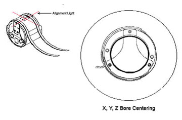
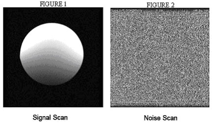

Operating Documentation
Direction 5670000, Rev# 1
Optima MR450w 1.5T Service Methods
Module Version 2.0, Version Date 5/21/09
Operating Documentation |
Required Persons: 1
Preliminary Timing (mins): Not Applicable
Procedure Timing (mins): 30
Finalization Timing (mins): Not Applicable
Follow this process to complete the SNR test using the GP Flex coil.
| Description | GE Part # | Qty |
| Head TLT Sphere | 46-265826G6 | 1 |
| Head Loader | 46-287899G1 | 1 |
| GP Flex Coil MR450 Adapter | 5176411 | 1 |
No consumables required.
No replacement parts required.
No general safety information.
No conditions required.
SNR measurements for the GPFLEX coil require sets of signal and noise scans. Refer to the Data Sheet in Section 5 to understand the data required to calculate the SNR. The image quality check uses two different protocols for signal and noise image acquisition. The signal scan is an FSE sequence used to minimize susceptibility and B0 inhomogeneity effects. The noise scan is a GRE sequence that has a Control Variable (do_noise) to eliminate the transmit RF completely during the scan. The signal scan must be run prior to the noise scan as the R1, R2, and TG values from the signal scan are used for the noise scan.
The following procedure is specific to the GE 1.5T Systems.
The Quad Head Coil must be completely removed from the cradle before performing any body or surface coil scans. Failure to do this may result in damage to the Quad Head Coil T/R network.
At the magnet, press Alignment Light button to turn on the light. Move the cradle to align the coil to the alignment lights as shown in Illustration 1. Press Landmark button to landmark the alignment.
Illustration 1: Landmark and Alignment

Move the coil to scan position by pushing the Move to Scan button; ensure the cable does not get snagged.
At the console, set the protocols as mentioned below (see Table 1).
Click [Save RX] to download the protocols, then click [Prepare to Scan].
Run [Auto Prescan]. Record the R1, R2, and TG values on the SNR Data Sheet (see Table 4).
Run [Scan].
Table 1: Signal Protocols
| PATIENT/EXAM INFORMATION | |
| ID | geservice |
| Name | GP Flex coil |
| Patient Weight | 111 lbs. (50 kg) |
| A/P Center, R/L Center | 0.0 |
| S/I Start | S75 |
| S/I End | I75 |
| # Slices | 5 |
| Table Delta | 0.0 |
| PATIENT POSITION | |
| Patient Position | Supine |
| Patient Entry | Head First |
| Coil | GP Flex |
| Series Description | Signal |
| IMAGING PARAMETERS | |
| Plane | Axial |
| Mode | 2D |
| Pulse Seq | FSE |
| Imaging Options | Fast |
| PSD Name | leave blank |
| Protocol | leave blank |
| SCAN TIMING | |
| # TE(s) per Scan | 1 |
| TE | 17 |
| TR | 500 |
| Echo Train Length | 4 |
| Bandwidth | 15.63 |
| ACQUISITION TIMING | |
| Freq | 256 |
| Phase | 256 |
| NEX | 1 |
| Phase FOV | 1.00 |
| Freq. DIR | R/L |
| Autoshim | On |
| Phase Correct | On |
| Auto Center Freq | Peak |
| SCANNING RANGE | |
| FOV | 24 |
| Slice Thickness | 5 |
| Spacing | 32.5 |
| A/P Center, R/L Center | 0.00 |
| S/I Start | S75 |
| S/I End | I75 |
| # Slices | 5 |
A signal scan must be run prior to the noise scan as the same R1, R2, and TG values must be used for both the signal and noise scans. Do not run an Auto Prescan prior to the noise scan as the values will be changed.
Copy the signal scan series. Use [Copy Series] (highlight signal series and click right mouse button) and [Paste Series] in RX Manager.
Click [View Edit] and set the protocols as mentioned in Table 1.
Click [Save RX] and right click on [Prepare to Scan].
Click on the arrow next to the scan button, then select [Research Options]. Then set rhformat and do_noise CVs to 1.
Run [Manual Prescan]. Do not make any changes.
Click [Done].
Run [Scan].
Table 2: Noise Protocols
| PATIENT POSITION | |
| Patient Position | Supine |
| Patient Entry | Head First |
| Coil | GP Flex |
| Series Description | Signal |
| IMAGING PARAMETERS | |
| Plane | Axial |
| Mode | 2D |
| Pulse Seq | GRE |
| Imaging Options | None |
| PSD Name | leave blank |
| Protocol | leave blank |
| SCAN TIMING | |
| # TE(s) per Scan | 1 |
| TE | Min Full |
| TR | 34 |
| Flip Angle | 1 |
| Bandwidth | 15.63 |
| ACQUISITION TIMING | |
| Freq | 256 |
| Phase | 256 |
| NEX | 1 |
| Phase FOV | 1.00 |
| Freq. DIR | R/L |
| Autoshim | On |
| Phase Correct | On |
| Auto Center Freq | Peak |
| SCANNING RANGE | |
| FOV | 24 |
| Slice Thickness | 5 |
| Spacing | 32.5 |
| A/P Center, R/L Center | 0.00 |
| S/I Start | S75 |
| S/I End | I75 |
| # Slices | 5 |
| Table Delta | 0.00 |
Regions of interest in both signal and noise images can be measured directly in the image browser. Click the Measure button, select the circular or rectangular shape, and adjust its size and orientation when the shape is displayed in the selected image. Mean, standard deviation, and area of the ROI will appear in the lower right corner of the image.

| NOTE: | The SNR calculation uses the MEAN of the signal image and STANDARD DEVIATION of the noise image. |
For the signal measurement, choose an ROI covering approximately 80% of the phantom. Also measure the noise with an ROI covering 80% of the FOV. A circular ROI should be used for the signal and a rectangular ROI for noise measurements centered at Phantom. Examples of typical ROIs are shown in Illustration 2.
Illustration 2: Signal and Noise Scan ROI Examples

The SNR measurements must be greater than or equal to the specifications in Table 3.
Table 3: SNR Specifications
| Slice Location | Image Number | SNR |
| S37.5 | 2 | 72.5 |
| S0 | 3 | 106 |
| I37.5 | 4 | 72 |
| NOTE: | Image 1 and image 5 are collected to verify that the phantom is correctly centered. For example, you would want images 1 and 5 to be the same size. If they are not the same size, then the phantom should be repositioned relative to the coil center. |
Select the diode test function on the Digital Multimeter (DMM).
Connect the positive lead of the DMM to the center pin of the BNC on the external cable. Connect the negative lead to the main housing/ground of the BNC.
Flex the external cable, especially near the connectors and the strain relief, and observe that a reading of 0.400 to 0.600 should remain on the DMM with no instability or fluctuations.
Connect the positive lead of the DMM to the main housing/ground of the BNC on the external cable. Connect the negative lead to the center pin of the BNC.
Flex the external cable, especially near the connectors and the strain relief, and observe that a reading of INFINITY should remain on the DMM with no instability or fluctuations.
If the cable fails any of the above tests, replace it. Refer to Flex Coil Replacements.
Illustration 3: BNC Connector
| NOTE: | There is only one PIN diode in this antenna. This procedure will indicate if the PIN diode is defective. |
Select the diode test function on the Digital Multimeter (DMM).
Connect the positive lead of the DMM to the center pin of the BNC on the external cable. Connect the negative lead to the main housing/ground of the BNC.
A reading of 0.400 to 0.600 should be observed on the DMM.
If a reading below 0.400 is observed in either direction, either the output cable is shorted or the PIN diode is bad.
If a reading about 0.600 is observed in Step 3, the PIN diode is defective.
Connect the positive lead of the DMM to the main housing/ground of the BNC on the external cable. Connect the negative lead to the center pin of the BNC.
A reading of INFINITY should be observed on the DMM.
If a reading of INFINITY is observed in both directions, either the output cable is open or the PIN diode is open.
If any of the above conditions fails, replace the PIN diode. Refer to Flex Coil Replacements.
Use the table below to record the calculated signal to noise ratio (SNR) data obtained from the Functional Checks.
Table 4: SNR Data Sheet
| Date | Comments | ||||||
| Slice Location | R1 | R2 | TG | Signal Mean (A) | Noise Std. Dev. (B) | SNR (A/B) | SNR Spec Limit |
| S37.5 | 72.5 | ||||||
| S0 | 106 | ||||||
| I37.5 | 72 | ||||||
| Date | Comments | ||||||
| Slice Location | R1 | R2 | TG | Signal Mean (A) | Noise Std. Dev. (B) | SNR (A/B) | SNR Spec Limit |
| S37.5 | 72.5 | ||||||
| S0 | 106 | ||||||
| I37.5 | 72 | ||||||
| Date | Comments | ||||||
| Slice Location | R1 | R2 | TG | Signal Mean (A) | Noise Std. Dev. (B) | SNR (A/B) | SNR Spec Limit |
| S37.5 | 72.5 | ||||||
| S0 | 106 | ||||||
| I37.5 | 72 | ||||||